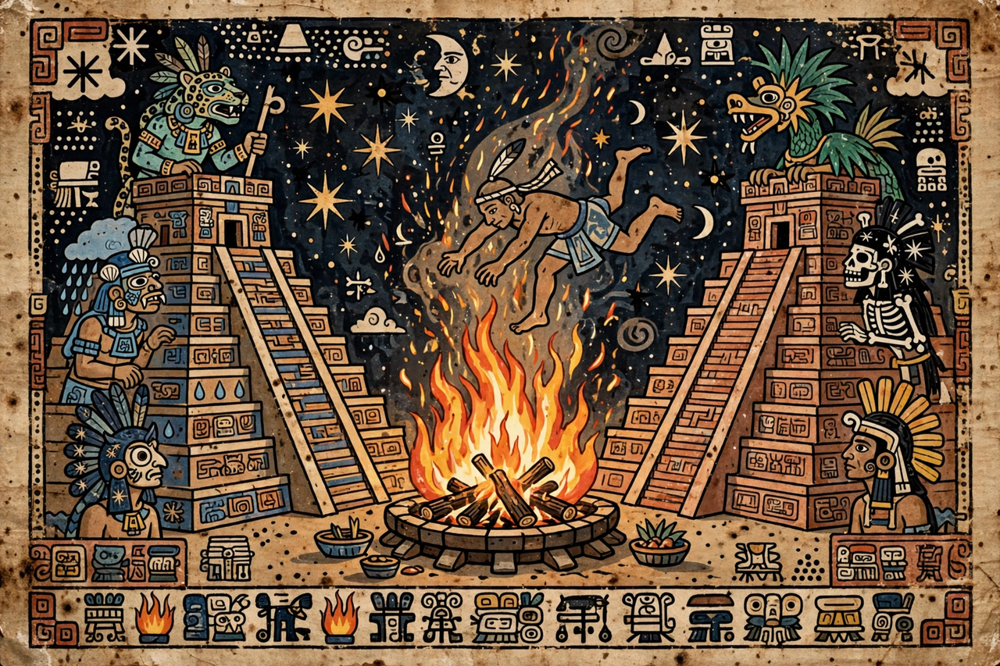

Nanahuatzin
| Nanahuatzin | |
|---|---|
| Member of | Aztec pantheon |
| Becomes | The Fifth Sun (Tonatiuh), in the usual telling |
| Counterpart | Tecuciztecatl, who becomes the Moon |
| Principal source | Florentine Codex, Book 7 |

Nanahuatzin (Classical Nahuatl: Nanāhuatzin, "the pustuled one" or "the scabby one") is a humble, poor and disease-marked god in Aztec mythology who, according to the myth of the Five Suns, sacrificed himself in a great fire at Teotihuacan and thereby became the Fifth Sun, the sun of the present world age. His story, recorded most fully in Book 7 of the Florentine Codex, is among the most beloved of Aztec myths and a founding statement of the Aztec ethic of self-sacrifice.
The myth
After the fourth world was destroyed, the gods gathered in darkness at Teotihuacan to decide who would become the new sun by leaping into a great hearth fire. The rich and handsome god Tecuciztecatl volunteered, and the gods chose the poor, bubo-covered Nanahuatzin as the second volunteer. During four days of penance, Tecuciztecatl offered luxuries — quetzal feathers, gold, coral and jade — while Nanahuatzin offered green reeds, maguey spines and his own blood and scabs. At midnight both approached the fire. Four times Tecuciztecatl ran at the flames and shrank back in fear; then Nanahuatzin, called upon by the gods, shut his eyes and threw himself in at once, crackling and hissing in the fire. Shamed, Tecuciztecatl leapt after him, and an eagle and a jaguar followed (hence their burnt markings).
Sun and Moon
Two suns then rose in the east. The gods, objecting that the arrogant Tecuciztecatl should not shine as brightly as the selfless Nanahuatzin, hurled a rabbit into his face, dimming him into the Moon — which is why, in Nahua eyes, a rabbit can still be seen on the moon's face. But the new sun, now called Tonatiuh, would not move across the sky. He demanded the blood of the other gods, who accordingly sacrificed themselves (in many versions through Quetzalcoatl or Xolotl's agency) to set him in motion — the mythic charter for the Aztec doctrine that human sacrifice must continue to feed the sun and avert the end of the Fifth Sun in earthquakes.
Interpretation
Commentators have stressed the myth's inversion of earthly values: the poor, diseased and despised god triumphs through humility and courage over the rich god's cowardice. Some scholars connect Nanahuatzin with older solar and fire cults at Teotihuacan itself, where his leap into the hearth is set between the great pyramids. In modern Mexico the story is frequently retold in children's literature as a parable of selflessness.
See also: Mesoamerican religion · New Fire ceremony · Mictlan